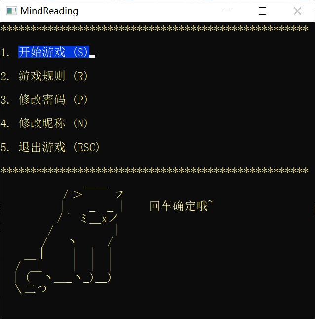
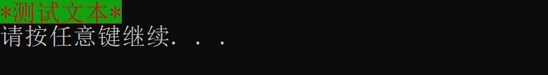

控制台程序编程中，如果主菜单总是需要输入数字选择，那显得很不直观，不像正常主菜单方向键可以上下移动选择按钮，所以这一次写代码的时候就直接改善此问题！
效果预览

原理详释
一、控制台窗口光标移动
原本控制台的光标是逐文本向后的，我们要想实现任意位置的文本重输出就需要将光标移动到指定位置，然后覆盖原文本。但是， Windows 系统并没有为我们提供相应的 API ，所以我们需要自己编写一个函数用来控制控制台光标的位置。
//定位函数
void gotoxy(int x, int y)
{
COORD pos = { x,y };// 是表示 pos 坐标位置为参数对应的(x，y)
HANDLE hOut = GetStdHandle(STD_OUTPUT_HANDLE);// 创建一个 hOut 句柄变量来接收标准输出句柄
SetConsoleCursorPosition(hOut, pos);// 该函数设置控制台(cmd)光标位置
}注释：
COORD是Windows API中定义的一种结构，表示一个字符在控制台屏幕上的坐标。其定义为：
typedef struct _COORD {
SHORT X; // horizontal coordinate
SHORT Y; // vertical coordinate
} COORD;二、键盘事件监听
输入事件中的键盘事件通常有字符事件和按键事件，这些事件的附带信息构成了键盘输入的信息，而想要读取这些信息，是要通过API函数 ReadConsoleInput来获取的，函数原型如下：
BOOL ReadConsoleInput( //读取输入信息
HANDLE hConsoleInput, //句柄
PINPUT_RECORD lpBuffer, //输入事件结构体的指针
DWORD nLength, //要读取的记录数
LPDWORD lpNumberOfEventsRead //用来接受成功读取记录数的指针
); //如果该函数成功调用，返回非零值
//输入事件结构体的指针可以是结构体数组的首地址，这样就可以一次性读取多个记录数。另外还需要了解几个和读取键盘输入事件有关的结构体，各结构体原型如下：
typedef struct _INPUT_RECORD //输入事件结构体
{
WORD EventType; //事件类型
union
{
KEY_EVENT_RECORD KeyEvent; //按键事件
MOUSE_EVENT_RECORD MouseEvent; //鼠标事件
WINDOW_BUFFER_SIZE_RECORD WindowBufferSizeEvent;
MENU_EVENT_RECORD MenuEvent;
FOCUS_EVENT_RECORD FocusEvent;
} Event; //具体的事件
} INPUT_RECORD;
/*
其中事件类型EventType的值有5种
KEY_EVENT 代表Event包含一个KEY_EVENT_RECODE结构体
MOUSE_EVENT 代表Event包含一个MOUSE_EVENT_RECODE结构体
WINDOW_BUFFER_SIZE_EVENT 代表Event包含一个WINDOW_BUFFER_SIZE_EVENT_RECORD结构体
MENU_EVENT 代表Event包含一个MENU_EVENT_RECORD结构体
FOCUS_EVENT 代表Event包含一个FOCUS_EVENT_RECORD结构体
*/
typedef struct _KEY_EVENT_RECORD //键盘事件结构体
{
BOOL bKeyDown; //按键状态，true代表键按下，false代表键释放
WORD wRepeatCount; //按键次数
WORD wVirtualKeyCode; //虚拟键
WORD wVirtualScanCode; //虚拟键扫描码
union
{
WCHAR UnicodeChar; //解释成Unicode宽字符
CHAR AsciiChar; //解释成ASCII码字符
} uChar;
DWORD dwControlKeyState; //控制键状态
} KEY_EVENT_RECORD;
/*
控制键各状态的值
ENHANCED_KEY 扩展键被按下
LEFT_ALT_PRESSED 左Alt键被按下
LEFT_CTRL_PRESSED 左Ctrl键被按下
RIGHT_ALT_PRESSED 右Alt键被按下
RIGHT_CTRL_PRESSED 右Ctrl键被按下
NUMLOCK_ON 数字锁定被打开
SCROLLLOCK_ON 滚动锁定被打开
CAPSLOCK_ON 大写锁定被打开
SHIFT_PRESSED Shift键被按下
*/接下来我们可以写一个最简单的实例代码以供参考：
#include <stdio.h>
#include <stdlib.h>
#include <windows.h>
#include <conio.h>
#define true 1
#define false 0
int main()
{
HANDLE handle_in = GetStdHandle(STD_INPUT_HANDLE); //获得标准输入设备句柄
INPUT_RECORD keyrec; //定义输入事件结构体
DWORD res; //定义返回记录
while (1)
{
ReadConsoleInput(handle_in, &keyrec, 1, &res); //读取输入事件
if (keyrec.EventType == KEY_EVENT) //如果当前事件是键盘事件
{
if (keyrec.Event.KeyEvent.wVirtualKeyCode == VK_ESCAPE) //当前事件的虚拟键为Esc键
{
printf("Esc ");
}
}
}
return 0;
}注意：
在上面的样例程序中，当你按下Esc键后又马上释放，程序会输出两次Esc，因为有两次事件的虚拟键代码都是Esc键的代码，一次是按下，一次是释放。如果要实现按下键后出现反应，释放不出现反应，那么需将上例程序中第18行代码的条件改成：
if (keyrec.Event.KeyEvent.wVirtualKeyCode == VK_ESCAPE
&& keyrec.Event.KeyEvent.bKeyDown == true) //表示当前为键按下而不是键释放根据控制键的状态我们可以实现不同的状态输出不同的值以及组合键的实现，下面的样例程序在大写锁定打开时输入A键则输出大写字母A，否则输出小写字母a。而在Shift键被按下的状态是则输出Shift+A以及Shift+a。样例程序如下:
#include <stdio.h>
#include <stdlib.h>
#include <windows.h>
#include <conio.h>
#define true 1
#define false 0
int main()
{
HANDLE handle_in = GetStdHandle(STD_INPUT_HANDLE); //获得标准输入设备句柄
INPUT_RECORD keyrec; //定义输入事件结构体
DWORD res; //定义返回记录
while (1)
{
ReadConsoleInput(handle_in, &keyrec, 1, &res); //读取输入事件
if (keyrec.EventType == KEY_EVENT) //如果当前事件是键盘事件
{
if (keyrec.Event.KeyEvent.wVirtualKeyCode == 'A'
&& keyrec.Event.KeyEvent.bKeyDown == true) //当按下字母A键时
{
if (keyrec.Event.KeyEvent.dwControlKeyState & SHIFT_PRESSED) //Shift键为按下状态
{
printf("Shift+");
}
if (keyrec.Event.KeyEvent.dwControlKeyState & CAPSLOCK_ON) //大写锁定为打开状态
{
printf("A ");
}
else //大写锁定关闭状态
{
printf("a ");
}
}
}
}
return 0;
}最后附上部分常用虚拟键代码表：
| 虚拟键代码 | 值 | 键名称 |
|---|---|---|
| VK_BACK | 0x08 | 退格键 |
| VK_TAB | 0x09 | Tab键 |
| VK_RETURN | 0x0D | 回车键 |
| VK_SHIFT | 0x10 | Shift键 |
| VK_LSHIFT | 0xA0 | 左Shift键 |
| VK_RSHIFT | 0xA1 | 右Shift键 |
| VK_CONTROL | 0x11 | Ctrl键 |
| VK_LCONTROL | 0xA2 | 左Ctrl键 |
| VK_RCONTROL | 0xA3 | 右Ctrl键 |
| VK_MENU | 0x12 | Alt键 |
| VK_LMENU | 0xA4 | 左Alt键 |
| VK_RMENU | 0xA5 | 右Alt键 |
| VK_PAUSE | 0x13 | Pause键 |
| VK_CAPITAL | 0x14 | Caps Lock键 |
| VK_NUMLOCK | 0x90 | Num Lock键 |
| VK_SCROLL | 0x91 | Scroll Lock键 |
| VK_ESCAPE | 0x1B | Esc键 |
| VK_SPACE | 0x20 | 空格键 |
| VK_PRIOR | 0x21 | Page Up键 |
| VK_NEXT | 0x22 | Page Down键 |
| VK_END | 0x23 | End键 |
| VK_HOME | 0x24 | Home键 |
| VK_LEFT | 0x25 | 左方向键 |
| VK_UP | 0x26 | 上方向键 |
| VK_RIGHT | 0x27 | 右方向键 |
| VK_DOWN | 0x28 | 下方向键 |
| VK_DELETE | 0x2E | Delete键 |
| VK_INSERT | 0x2D | Insert键 |
| ‘0’ | 0x30 | 0键（非小键盘） |
| ‘1’ | 0x31 | 1键（非小键盘） |
| ‘2’ | 0x32 | 2键（非小键盘） |
| … | … | … |
| ‘9’ | 0x39 | 9键（非小键盘） |
| ‘A’ | 0x41 | A键 |
| ‘B’ | 0x42 | B键 |
| … | … | … |
| ‘Z’ | 0x5A | Z键 |
| VK_SLEEP | 0x5F | Sleep键 |
| VK_NUMPAD0 | 0x60 | 小键盘0键 |
| VK_NUMPAD1 | 0x61 | 小键盘1键 |
| VK_NUMPAD2 | 0x62 | 小键盘2键 |
| … | … | … |
| VK_NUMPAD9 | 0x69 | 小键盘9键 |
| VK_MULTIPLY | 0x6A | 小键盘乘键* |
| VK_ADD | 0x6B | 小键盘加键+ |
| VK_SUBTRACT | 0x6D | 小键盘减键- |
| VK_DIVIDE | 0x6F | 小键盘除键/ |
| VK_DECIMAL | 0x6E | 小键盘点键. |
| VK_F1 | 0x70 | F1键 |
| VK_F2 | 0x71 | F2键 |
| … | … | … |
| VK_F12 | 0x7B | F12键 |
| VK_F13 | 0x7C | F13键 注：别问我， 我也不知道 什么电脑有这么多键 |
| … | … | … |
| VK_F24 | 0x87 | F24键 |
| VK_OEM_1 | 0xBA | ;:键 |
| VK_OEM_2 | 0xBF | /?键 |
| VK_OEM_3 | 0xC0 | ·~键 |
| VK_OEM_4 | 0xDB | [{键 |
| VK_OEM_5 | 0xDC | \|键 |
| VK_OEM_6 | 0xDD | ]}键 |
| VK_OEM_7 | 0xDE | '"键 |
| VK_OEM_PLUS | 0xBB | =+键 |
| VK_OEM_MINUS | 0xBD | -_键 |
| VK_OEM_COMMA | 0xBC | ,<键 |
| VK_OEM_PERIOD | 0xBE | .>键 |
三、按键高亮（控制台局部文本的样式控制）
控制台局部文本样式是通过控制台的转义序列来实现的，这是文本模式下的系统显示功能。转义序列是以ESC开始的，即\033，ESC的十进制是27，转为八进制就是33了。
通用格式大致为ESC[{attr1};{attr2};…;{attrn}m，其中 attr 表示的是属性，也是属性值，通常直接就是数字表示了。在此我们进行三个常用属性的设置，主要是显示方式、字体颜色和背景色。
显示方式
0 （默认值）
1 （高亮显示，顺便加粗？不确定）
2 （暗淡）
22（非粗体，不确定）
4 （下划线）
5 （闪烁，但是我没看出有什么效果。。）
25（非闪烁）
7 （反显，我也没看出效果）
27（非反显）
8 （隐藏）字体颜色
30（黑色）
31（红色）
32（绿色）
33（黄色）
34（蓝色）
35（品红）
36（青色）
37（白色）背景色
40（黑色）
41（红色）
42（绿色）
43（黄色）
44（蓝色）
45（品红）
46（青色）
47（白色）下面给出一个参考实例，仅供参考：
printf("\033[4;31;42m*测试文本*\033[0m");效果图：

结束语
到这里，相关的核心知识点都已经总结完成。剩下的具体功能还需要自己自行开发和实现，过多的叙述往往会限制大家的创造能力。所以，相关的逻辑代码就由大家自己完成吧！
补充一下，那个按键选择实际上并不是真的有个按键，而是通过光标重新定位然后覆盖原输出，做出按键选择到了该位置的假象…好了，就说这么多吧！拜拜ヾ(•ω•`)o~


![IDEA 安装及汉化教程[2022]](/medias/featureimages/0.jpg)